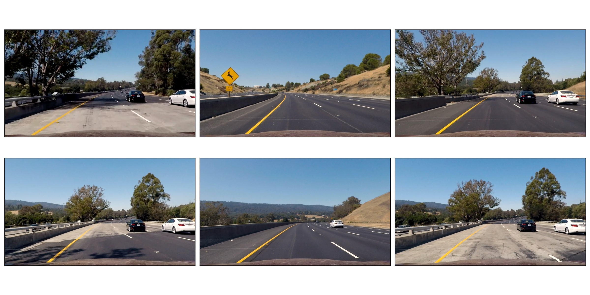
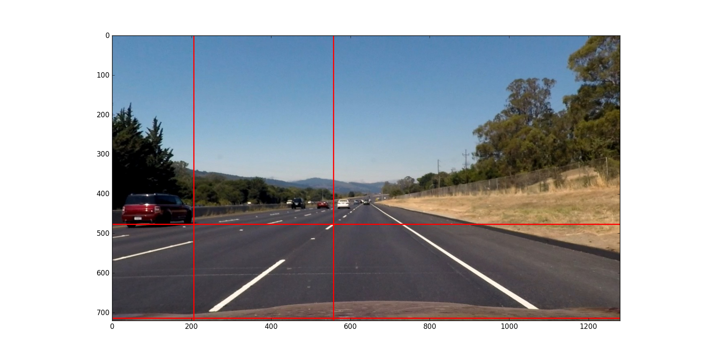
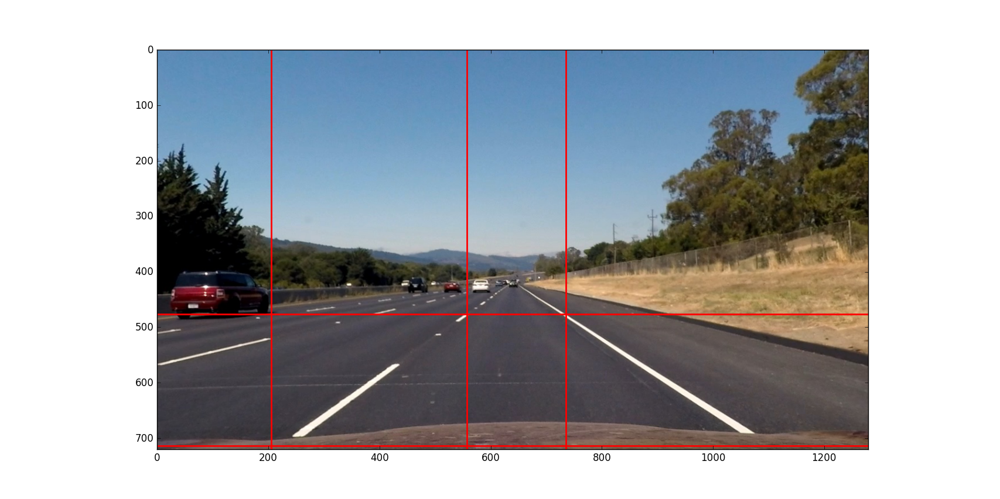

Advanced Lane Lines
Introduction
Methods
The goals / steps of this project are the following:
- Compute the camera calibration matrix and distortion coefficients given a set of chessboard images.
- Apply a distortion correction to raw images.
- Use color transforms, gradients, etc., to create a thresholded binary image.
- Apply a perspective transform to rectify binary image ("birds-eye view").
- Detect lane pixels and fit to find the lane boundary.
- Determine the curvature of the lane and vehicle position with respect to center.
- Warp the detected lane boundaries back onto the original image.
- Output visual display of the lane boundaries and numerical estimation of lane curvature and vehicle position.
Setup
from collections import deque from itertools import groupby, islice, zip_longest, cycle, filterfalse from matplotlib.collections import PatchCollection from matplotlib.patches import Polygon from matplotlib.widgets import Button from matplotlib.widgets import Slider, Button, RadioButtons from moviepy.editor import VideoFileClip from mpl_toolkits.axes_grid1 import ImageGrid import cProfile import cv2 import glob import matplotlib import matplotlib.image as mpimg import matplotlib.pyplot as plt import numpy as np import pdb
Preprocessing
Camera Calibration
def measure_distortion(calibration_files): files = calibration_files objp = np.zeros((9*6,3), np.float32) objp[:,:2] = np.mgrid[0:9,0:6].T.reshape(-1,2) stage1 = map(lambda x: (x,), cycle(files)) stage2 = map(lambda x: x + (mpimg.imread(x[0]),), stage1) stage3 = map(lambda x: x + (cv2.findChessboardCorners(cv2.cvtColor(x[1], cv2.COLOR_RGB2GRAY), (9,6)),), stage2) stage4 = map(lambda x: x + (cv2.drawChessboardCorners(np.copy(x[1]), (9,6), *(x[2][::-1])),), stage3) filenames,images,corners,annotated_images = zip(*filter(lambda x: x[2][0], islice(stage4, len(files)))) _,imgpoints = zip(*corners) objpoints = [objp for i in range(len(imgpoints))] ret, mtx, dist, rvecs, tvecs = cv2.calibrateCamera(objpoints, imgpoints, list(islice(stage2,1))[0][1].shape[:2:][::-1], None, None) return mtx, dist, zip(filenames, annotated_images)
Distortion Correction
def get_undistorter(calibration_files): mtx,dist,annotated_images = measure_distortion(calibration_files) return lambda x: cv2.undistort(x, mtx, dist, None, mtx), annotated_images
undistort,annotated_images = get_undistorter(glob.glob("camera_cal/*.jpg")) fig = plt.figure() grid = ImageGrid(fig, 111, nrows_ncols=(4,4), axes_pad=0.0) for p in zip(annotated_images, grid): p[1].imshow(p[0][1]) fig.savefig("output_images/annotated_calibration_images.jpg")

def visualize(filename, a): fig, axes = plt.subplots(2,3,figsize=(24,12),subplot_kw={'xticks':[],'yticks':[]}) fig.subplots_adjust(hspace=0.03, wspace=0.05) for p in zip(sum(axes.tolist(),[]), a): p[0].imshow(p[1],cmap='gray') plt.tight_layout() fig.savefig(filename) plt.close()
visualize("output_images/test_images.jpg", (mpimg.imread(f) for f in cycle(glob.glob("test_images/test*.jpg"))))

visualize("output_images/undistorted_test_images.jpg", (undistort(mpimg.imread(f)) for f in cycle(glob.glob("test_images/test*.jpg"))))

Perspective Measurement
def measure_warp(img): top = 0 bottom = img.shape[0] def handler(e): if len(src)<4: plt.axhline(int(e.ydata), linewidth=2, color='r') plt.axvline(int(e.xdata), linewidth=2, color='r') src.append((int(e.xdata),int(e.ydata))) if len(src)==4: dst.extend([(300,bottom),(300,top),(980,top),(980,bottom)]) was_interactive = matplotlib.is_interactive() if not matplotlib.is_interactive(): plt.ion() fig = plt.figure() plt.imshow(img) global src global dst src = [] dst = [] cid1 = fig.canvas.mpl_connect('button_press_event', handler) cid2 = fig.canvas.mpl_connect('close_event', lambda e: e.canvas.stop_event_loop()) fig.canvas.start_event_loop(timeout=-1) M = cv2.getPerspectiveTransform(np.asfarray(src, np.float32), np.asfarray(dst, np.float32)) Minv = cv2.getPerspectiveTransform(np.asfarray(dst, np.float32), np.asfarray(src, np.float32)) matplotlib.interactive(was_interactive) return M, Minv
def get_warpers(corrected_image): M, Minv = measure_warp(corrected_image) return lambda x: cv2.warpPerspective(x, M, x.shape[:2][::-1], flags=cv2.INTER_LINEAR), lambda x: cv2.warpPerspective(x, Minv, x.shape[:2][::-1], flags=cv2.INTER_LINEAR), M, Minv
warp,unwarp,M,Minv = get_warpers(undistort(mpimg.imread("test_images/straight_lines2.jpg")))




visualize("output_images/warped_undistorted_test_images.jpg", (warp(undistort(mpimg.imread(f))) for f in cycle(glob.glob("test_images/test*.jpg"))))

Pipeline
Gradient and Color Thresholds
def scale(img, factor=255.0): scale_factor = np.max(img)/factor return (img/scale_factor).astype(np.uint8)
def derivative(img, sobel_kernel=3): derivx = np.absolute(cv2.Sobel(img, cv2.CV_64F, 1, 0, ksize=sobel_kernel)) derivy = np.absolute(cv2.Sobel(img, cv2.CV_64F, 0, 1, ksize=sobel_kernel)) gradmag = np.sqrt(derivx**2 + derivy**2) absgraddir = np.arctan2(derivy, derivx) return scale(derivx), scale(derivy), scale(gradmag), absgraddir
def grad(img, k1=3, k2=15): _,_,g,_ = derivative(img, sobel_kernel=k1) _,_,_,p = derivative(img, sobel_kernel=k2) return g,p
def hls_select(img): hsv = cv2.cvtColor(img, cv2.COLOR_RGB2HLS).astype(np.float) h = hsv[:,:,0] l = hsv[:,:,1] s = hsv[:,:,2] return h,l,s
def rgb_select(img): rgb = img r = rgb[:,:,0] g = rgb[:,:,1] b = rgb[:,:,2] return r,g,b
def threshold(img, thresh_min=0, thresh_max=255): binary_output = np.zeros_like(img) binary_output[(img >= thresh_min) & (img <= thresh_max)] = 1 return binary_output
land = lambda *x: np.logical_and.reduce(x) lor = lambda *x: np.logical_or.reduce(x)
def highlight(img): r,g,b = rgb_select(img) h,l,s = hls_select(img) o01 = threshold(r, 200, 255) o02 = threshold(g, 200, 255) o03 = threshold(s, 200, 255) return scale(lor(land(o01,o02),o03))
visualize("output_images/binary_undistorted_test_images.jpg", (highlight(undistort(mpimg.imread(f))) for f in cycle(glob.glob("test_images/test*.jpg"))))

Perspective Transform
visualize("output_images/warped_binary_undistorted_images.jpg", (warp(highlight(undistort(mpimg.imread(f)))) for f in cycle(glob.glob("test_images/test*.jpg"))))

Lane-Finding
def detect_lines_sliding_window(warped_binary): # Assuming you have created a warped binary image called "warped_binary" # Take a histogram of the bottom half of the image histogram = np.sum(warped_binary[warped_binary.shape[0]/2:,:], axis=0) # Create an output image to draw on and visualize the result out_img = np.dstack((warped_binary, warped_binary, warped_binary))*255 # Find the peak of the left and right halves of the histogram # These will be the starting point for the left and right lines midpoint = np.int(histogram.shape[0]/2) leftx_base = np.argmax(histogram[:midpoint]) rightx_base = np.argmax(histogram[midpoint:]) + midpoint # Choose the number of sliding windows nwindows = 9 # Set height of windows window_height = np.int(warped_binary.shape[0]/nwindows) # Identify the x and y positions of all nonzero pixels in the image nonzero = warped_binary.nonzero() nonzeroy = np.array(nonzero[0]) nonzerox = np.array(nonzero[1]) # Current positions to be updated for each window leftx_current = leftx_base rightx_current = rightx_base # Set the width of the windows +/- margin margin = 100 # Set minimum number of pixels found to recenter window minpix = 50 # Create empty lists to receive left and right lane pixel indices left_lane_inds = [] right_lane_inds = [] # Step through the windows one by one for window in range(nwindows): # Identify window boundaries in x and y (and right and left) win_y_low = warped_binary.shape[0] - (window+1)*window_height win_y_high = warped_binary.shape[0] - window*window_height win_xleft_low = leftx_current - margin win_xleft_high = leftx_current + margin win_xright_low = rightx_current - margin win_xright_high = rightx_current + margin # Draw the windows on the visualization image cv2.rectangle(out_img,(win_xleft_low,win_y_low),(win_xleft_high,win_y_high),(0,255,0), 2) cv2.rectangle(out_img,(win_xright_low,win_y_low),(win_xright_high,win_y_high),(0,255,0), 2) # Identify the nonzero pixels in x and y within the window good_left_inds = ((nonzeroy >= win_y_low) & (nonzeroy < win_y_high) & (nonzerox >= win_xleft_low) & (nonzerox < win_xleft_high)).nonzero()[0] good_right_inds = ((nonzeroy >= win_y_low) & (nonzeroy < win_y_high) & (nonzerox >= win_xright_low) & (nonzerox < win_xright_high)).nonzero()[0] # Append these indices to the lists left_lane_inds.append(good_left_inds) right_lane_inds.append(good_right_inds) # If you found > minpix pixels, recenter next window on their mean position if len(good_left_inds) > minpix: leftx_current = np.int(np.mean(nonzerox[good_left_inds])) if len(good_right_inds) > minpix: rightx_current = np.int(np.mean(nonzerox[good_right_inds])) # Concatenate the arrays of indices left_lane_inds = np.concatenate(left_lane_inds) right_lane_inds = np.concatenate(right_lane_inds) # Extract left and right line pixel positions leftx = nonzerox[left_lane_inds] lefty = nonzeroy[left_lane_inds] rightx = nonzerox[right_lane_inds] righty = nonzeroy[right_lane_inds] # Fit a second order polynomial to each left_fit,left_res,_,_,_ = np.polyfit(lefty, leftx, 2, full=True) right_fit,right_res,_,_,_ = np.polyfit(righty, rightx, 2, full=True) # Generate x and y values for plotting ploty = np.linspace(0, warped_binary.shape[0]-1, warped_binary.shape[0] ) left_fitx = left_fit[0]*ploty**2 + left_fit[1]*ploty + left_fit[2] right_fitx = right_fit[0]*ploty**2 + right_fit[1]*ploty + right_fit[2] out_img[nonzeroy[left_lane_inds], nonzerox[left_lane_inds]] = [255, 0, 0] out_img[nonzeroy[right_lane_inds], nonzerox[right_lane_inds]] = [0, 0, 255] out_img[ploty.astype('int'),left_fitx.astype('int')] = [0, 255, 255] out_img[ploty.astype('int'),right_fitx.astype('int')] = [0, 255, 255] y_eval = warped_binary.shape[0] # Define conversions in x and y from pixels space to meters ym_per_pix = 30/720 # meters per pixel in y dimension xm_per_pix = 3.7/700 # meters per pixel in x dimension # Fit new polynomials to x,y in world space left_fit_cr = np.polyfit(lefty*ym_per_pix, leftx*xm_per_pix, 2) right_fit_cr = np.polyfit(righty*ym_per_pix, rightx*xm_per_pix, 2) # Calculate the new radii of curvature left_curverad = ((1 + (2*left_fit_cr[0]*y_eval*ym_per_pix + left_fit_cr[1])**2)**1.5) / np.absolute(2*left_fit_cr[0]) right_curverad = ((1 + (2*right_fit_cr[0]*y_eval*ym_per_pix + right_fit_cr[1])**2)**1.5) / np.absolute(2*right_fit_cr[0]) return left_fit, right_fit, np.sqrt(left_fit[1]/len(leftx)), np.sqrt(right_fit[1]/len(rightx)), left_curverad, right_curverad, out_img
visualize("output_images/detected_lines_test_images.jpg", (detect_lines_sliding_window(warp(highlight(undistort(mpimg.imread(f)))))[6] for f in cycle(glob.glob("test_images/test*.jpg"))))

def detect_lines(warped_binary, left_fit, right_fit): # from the next frame of video (also called "binary_warped") # It's now much easier to find line pixels! nonzero = warped_binary.nonzero() nonzeroy = np.array(nonzero[0]) nonzerox = np.array(nonzero[1]) margin = 100 left_lane_inds = ((nonzerox > (left_fit[0]*(nonzeroy**2) + left_fit[1]*nonzeroy + left_fit[2] - margin)) & (nonzerox < (left_fit[0]*(nonzeroy**2) + left_fit[1]*nonzeroy + left_fit[2] + margin))) right_lane_inds = ((nonzerox > (right_fit[0]*(nonzeroy**2) + right_fit[1]*nonzeroy + right_fit[2] - margin)) & (nonzerox < (right_fit[0]*(nonzeroy**2) + right_fit[1]*nonzeroy + right_fit[2] + margin))) # Again, extract left and right line pixel positions leftx = nonzerox[left_lane_inds] lefty = nonzeroy[left_lane_inds] rightx = nonzerox[right_lane_inds] righty = nonzeroy[right_lane_inds] # Fit a second order polynomial to each left_fit,left_res,_,_,_ = np.polyfit(lefty, leftx, 2, full=True) right_fit,right_res,_,_,_ = np.polyfit(righty, rightx, 2, full=True) # Generate x and y values for plotting ploty = np.linspace(0, warped_binary.shape[0]-1, warped_binary.shape[0] ) left_fitx = left_fit[0]*ploty**2 + left_fit[1]*ploty + left_fit[2] right_fitx = right_fit[0]*ploty**2 + right_fit[1]*ploty + right_fit[2] y_eval = warped_binary.shape[0] # Define conversions in x and y from pixels space to meters ym_per_pix = 30/720 # meters per pixel in y dimension xm_per_pix = 3.7/700 # meters per pixel in x dimension # Fit new polynomials to x,y in world space left_fit_cr = np.polyfit(lefty*ym_per_pix, leftx*xm_per_pix, 2) right_fit_cr = np.polyfit(righty*ym_per_pix, rightx*xm_per_pix, 2) # Calculate the new radii of curvature left_curverad = ((1 + (2*left_fit_cr[0]*y_eval*ym_per_pix + left_fit_cr[1])**2)**1.5) / np.absolute(2*left_fit_cr[0]) right_curverad = ((1 + (2*right_fit_cr[0]*y_eval*ym_per_pix + right_fit_cr[1])**2)**1.5) / np.absolute(2*right_fit_cr[0]) return left_fit, right_fit, np.sqrt(left_fit[1]/len(leftx)), np.sqrt(right_fit[1]/len(rightx)), left_curverad, right_curverad, None
def draw_lane(undistorted, warped_binary, l_fit, r_fit, l_rad, r_rad, unwarp): # Create an image to draw the lines on warp_zero = np.zeros_like(warped_binary).astype(np.uint8) color_warp = np.dstack((warp_zero, warp_zero, warp_zero)) # Generate x and y values for plotting ploty = np.linspace(0, warped_binary.shape[0]-1, warped_binary.shape[0]) l_fitx = l_fit[0]*ploty**2 + l_fit[1]*ploty + l_fit[2] r_fitx = r_fit[0]*ploty**2 + r_fit[1]*ploty + r_fit[2] # Recast the x and y points into usable format for cv2.fillPoly() pts_left = np.array([np.transpose(np.vstack([l_fitx, ploty]))]) pts_right = np.array([np.flipud(np.transpose(np.vstack([r_fitx, ploty])))]) pts = np.hstack((pts_left, pts_right)) # Draw the lane onto the warped_binary blank image cv2.fillPoly(color_warp, np.int_([pts]), (0,255, 0)) # Warp the blank back to original image space using inverse perspective matrix (Minv) # newwarp = cv2.warpPerspective(color_warp, Minv, (image.shape[1], image.shape[0])) newwarp = unwarp(color_warp) # Combine the result with the original image result = cv2.addWeighted(undistorted, 1, newwarp, 0.3, 0) # Annotate image with lane curvature estimates cv2.putText(result, "L. Curvature: %.2f km" % (l_rad/1000), (50,50), cv2.FONT_HERSHEY_DUPLEX, 1, (255,255,255), 2) cv2.putText(result, "R. Curvature: %.2f km" % (r_rad/1000), (50,80), cv2.FONT_HERSHEY_DUPLEX, 1, (255,255,255), 2) # Annotate image with position estimate cv2.putText(result, "C. Position: %.2f m" % ((np.average((l_fitx + r_fitx)/2) - warped_binary.shape[1]//2)*3.7/700), (50,110), cv2.FONT_HERSHEY_DUPLEX, 1, (255,255,255), 2) return result
visualize("output_images/drawn_lanes_test_images.jpg", (get_processor(1)(mpimg.imread(f)) for f in cycle(glob.glob("test_images/test*.jpg"))))

def get_processor(nbins=10): bins = nbins l_params = deque(maxlen=bins) r_params = deque(maxlen=bins) l_radius = deque(maxlen=bins) r_radius = deque(maxlen=bins) weights = np.arange(1,bins+1)/bins def process_image(img0): undistorted = undistort(img0) warped_binary = warp(highlight(undistorted)) l_fit, r_fit, l_res, r_res, l_curverad, r_curverad, _ = detect_lines_sliding_window(warped_binary) if len(l_params)==0 else detect_lines(warped_binary,np.average(l_params,0,weights[-len(l_params):]), np.average(r_params,0,weights[-len(l_params):])) l_params.append(l_fit) r_params.append(r_fit) l_radius.append(l_curverad) r_radius.append(r_curverad) annotated_image = draw_lane(undistorted, warped_binary, np.average(l_params,0,weights[-len(l_params):]), np.average(r_params,0,weights[-len(l_params):]), np.average(l_radius,0,weights[-len(l_params):]), np.average(r_radius,0,weights[-len(l_params):]), unwarp) return annotated_image return process_image
process = get_processor() in_clip = VideoFileClip("project_video.mp4") out_clip = in_clip.fl_image(process) cProfile.run('out_clip.write_videofile("output_images/project_output.mp4", audio=False)', 'restats')